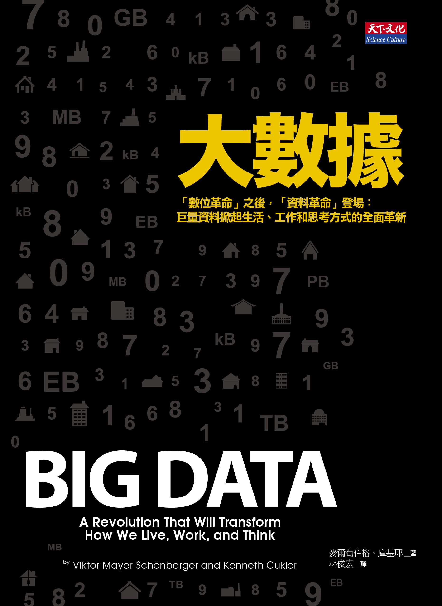

YC Note
YC NoteYC NOTE
想像力比知識更重要

你好，我是宜昌，我從小就對這個世界充滿著好奇心，喜歡接觸新的事物，喜歡思考並鑽研知識，物理本科生的我，身體裡永遠住著那追根究柢的科學家，因此我習慣於追溯原理來認識世界。
現在我正在學習Machine Learning，希望成為這領域的專家，為此目標，開啟了我的自學旅程，從基礎電腦科學到演算法，從Machine Learning理論學習到實務操作，一步一腳印的積累，而寫作正是自我檢驗的最好方法，因此這個網站我會與大家分享一些我學到的東西，希望你們會喜歡，有任何疑問都可以在文章下面留言，或者我也很樂意你寫信與我討論。
Email: ycc.tw.email@gmail.com
Github: https://github.com/GitYCC
Website: www.ycc.idv.tw

最近，Big Data這個詞相當的紅，但是對於這個詞我們還是有很多的誤會，一個常見的疑問是，究竟多大才可以稱得上是大數據呢？事實上，我接下來要介紹的這本書告訴你，大數據多「大」不是重點，重點是你怎麼看待和處理數據。
「大數據」這本書分為三個部分，在第一個部分，作者為讀者介紹大數據的三大思維變革，包括：採用全體數據取代抽樣數據、容忍資料的混雜特性、「是什麼」比「為什麼」還重要，第二部分則在講述大數據如何改變了商業、市場和社會的本質。第三部分在探討大數據會對人類產生什麼不好的影響，而我們如何去避免。本篇我主要著墨於第一部分和第二部分。
大數據是指不採用統計「隨機採樣」這樣的捷徑，而直接處理所有的數據。
在資料分析中，如果要研究的對象（母群體）非常的龐大、資料量非常大，我們通常會採取「隨機採樣」來處理，這條捷徑在處理特定問題非常成功，也因此它成為現代社會、現代測量領域的主要路數，但這方式存在著一些缺陷。
「隨機採樣」的缺陷之一是無法瞭解更深層次的細節。在宏觀領域起作用的方法在微觀領域失去了作用。隨機採樣就像印象派的畫作一樣，遠看很不錯，可以看見整個整體趨勢，但是一旦聚焦於某一點，就會變得模糊不清。
另外，「隨機採樣」還有一個缺陷是缺乏延展性，人們只能從採樣數據中得出事先設計好的問題的結果——千萬不要奢求採樣的數據還能回答你突然意識到的其他問題，也就是調查得出的數據不能夠重新分析以實現計劃之外的目的。
不過，在目前這個技術和資訊爆炸的時代，我們訊息量的增長速度比世界經濟的增長速度快4倍，而電腦數據處理能力的增長速度則比世界經濟的增長速度快9倍，也因此我們有更充沛的資料和處理資料的能力，所以是時候應該丟棄以往的「隨機採樣」，而直接採用「樣本=總體」的方式。
Xoom是一個專門從事跨境匯款業務的公司。2011年，它注意到用「發現卡」從新紐澤西州匯款的交易量比正常情況多一些，系統於是啟動警報。Xoom公司的CEO John Kunze(約翰·孔澤) 解釋說：「這個系統關注的是不應該出現的情況。」單獨來看，每筆交易都是合法的，但是事實證明這是一個犯罪集團在試圖詐騙。而要能發現異常的唯一方法是，需要檢查所有的數據，找出「隨機採樣」分析法所獲取不到的訊息。
另外一個例子，Lytro相機，它把大數據運用到了基本的攝影中。與傳統相機只可以記錄一束光不同，Lytro相機可以記錄整個光場裡所有的光，可以達到1100萬束之多。具體生成什麼樣的照片則可以在拍攝之後再依照需要決定。用戶沒必要在一開始就聚焦，因為該相機可以捕捉到所有的數據，所以之後可以選擇聚焦圖像中的任一一點。
大數據所謂的「大」，並不是指數據量有多大，而是指如何處理數據的方法，直接處理「樣本=總體」，而非傳統的「隨機採樣」，我們將得到更多的細節，做更多的事。
對於採取隨機取樣的小數據而言，保證每筆資料的質量是相當重要的，為了使結果更加準確，很多科學家都致力於優化測量工具。不過，面對大數據的時候，我們可能增加不少不正確的資料，正因為我們無法逐一的檢查，甚至在資料的格式上也難以統一，因此大數據本身就具有混雜的特性。
不過這混雜所造成的不準確也可以因為數據量大而彌補，事實上，大數據的簡單演算法比小數據的複雜演算法更為有效，舉個例子，在冷戰時期，美國掌握了大量關於蘇聯的各種資料，但缺少翻譯這些資料的人手。所以，計算機翻譯也成了急需解決的問題。那個時候的科學家想藉由結合文法規則和字典來創造一個翻譯機器， 最後卻失敗了，他們發現機器翻譯不能只是讓電腦熟悉常用規則，還必須教會電腦處理「特殊的」語言情況。畢竟，翻譯不僅僅只是記憶和複述，也涉及選詞，而明確地教會電腦這些是非常困難的。
時間拉回到現代，Google翻譯則採取另外一種方式，Google翻譯系統不由程式設計師直接告訴計算機要怎麼做，而是靠著資料來訓練計算機學習怎麼做，計算機會盡量吸收它能找到的所有翻譯文本，從各式各樣語言的公司網站上尋找對譯的文檔，還會去尋找聯合國和歐盟這些國際組織發佈的官方文件和報告的譯本，藉由這大量的數據去預測對譯詞語應該是什麼，然而儘管其輸入來源很混亂，但相較於其他翻譯系統而言，Google的翻譯質量相對而言還是最好的。
要想獲得大規模數據帶來的好處，混亂應該是一種標準途徑，而不應該去竭力避免，不過數據量一旦大，這些混亂所帶來的不精確將被彌補。
大數據利用數值方法，他可以看到人類不容易看出來的相關性，兩件事雖然擁有相關性，但並不代表他們擁有因果關係，但是在大部分時間裡，相關性比因果關係更為重要。
美國折扣零售商塔吉特（Target）使用大數據的相關性分析已經有很多年了。《紐約時報》的記者杜西格（Charles Duhigg）就在一份報道中闡述了塔吉特公司怎樣在完全不和准媽媽對話的前提下預測一個女性會在什麼時候懷孕。塔吉特公司注意到，資料上的婦女會在懷孕大概第三個月的時候買很多無香乳液。幾個月之後，她們會買一些營養品，比如鎂、鈣、鋅。公司最終找出了大概20多種關聯項目，這些關聯項目可以給顧客進行「懷孕趨勢」評分。杜西格在《習慣的力量》（The Power of Habit）一書中講到了接下來發生的事情。一天，一個男人衝進了一家位於明尼阿波利斯市郊的塔吉特商店，要求經理出來見他。他氣憤地說：「我女兒還是高中生，你們卻給她郵寄嬰兒服和嬰兒床的優惠券，你們是在鼓勵她懷孕嗎？」而當幾天後，經理打電話向這個男人致歉時，這個男人的語氣變得平和起來。他說：「我跟我的女兒談過了，她的預產期是8月份，是我完全沒有意識到這個事情的發生，應該說抱歉的人是我。」
在上述的例子，我們雖然不見得可以找出這20項關聯項和懷孕之間的因果關係，不過他們確實相關，所以我們可以用來預測。有些時候我們只需要知道「是什麼」就夠了，沒必要知道「為什麼」。
Matthew Fontaine Maury是一位前途看好的美國海軍軍官，1839年，卻意外的出了車禍，使得他無法繼續在海上工作，不過危機就是轉機，在近三年的休養，美國海軍將他安排進辦公室，讓他負責修復陳舊的圖表和儀器，他在其中挖到了寶，那是一批航海日記，日記裡頭詳細的記載了特定時間在特定地點的風、水和天氣狀況，Maury意識到如果把這些資料整理起來，將會呈現一張全新的航海圖，這些數據將會比大家口耳相傳的經驗還有用，後來也證明Maury是對的，這資料幫助船長們省去了三分之一左右的航程，後來全世界第一條跨越大西洋的電報電纜也是建基在這個基礎之上。
數據就像是一座鑽石礦，透過分析我們可以將其中的鑽石給掏出，事實上這金礦無所不在，數據可能藏於書籍或網路文本、數據可能藏於方位、數據可能藏於溝通網絡、數據可能藏於微型運動感測器，仔細留意，數據幾乎無所不在，什麼都可以量化，有了大數據的思維，我們不會再把世界看成只有單純是自然現象或是社會現象，我們會意識到世界的本質就是由眾多信息所構成的，而這會帶來的是一場商業上的變革。
作者認為大數據時代，依照提供價值不同，分別會出現三類的大數據公司，第一種是擁有大量數據的公司，第二種是擁有技能挖掘數據的公司，最後一種是提供嶄新大數據思維的公司，能從數據中創造出意想不到的價值，第三種是作者最為推崇的，作者列了幾種數據創新的方法。
作者提了五種數據創新方法，第一種是數據再利用，有許多數據因為儲存成本低而被保存下來，不過沒有被充分的利用，數據科學家稱之為「數據墳場」，從這墳場中我們可以盜到很多的寶，就像Maury從航海日記撈出了許多有用的資訊一樣。
第二種是數據間的整合，丹麥同時擁有從1985年起的手機用戶數據庫和該國所有癌症患者的資訊，有人想到如果整合這兩者資訊，研究人員可以研究手機用戶是不是比非手機用戶顯示出更容易得癌症，最後，研究結果沒有發現這兩者存在著相關性。
隨著大數據的出現，數據的總和比部分更有價值。當我們將多個數據集的總和重組在一起時，重組總和本身的價值也比單個總和更大
第三種是具可擴張性的數據，要使得數據可以一再的利用，我們必須在一開始就設計好他的可擴張性，也就是要盡可能的一次蒐集所有資料齊全，舉個知名的例子，Google街景拍攝，其備受爭議的街景汽車不僅僅拍攝房屋和道路的照片，他還同時採集了每個位置的GPS數據，甚至還加入了無線網路名稱的蒐集，一輛Google街景車每時每刻都在累積大量的各方面的數據，而這些資訊可能在目前用不到，不過未來的某天可能會用到，花一次的錢可以得到更多的好處。
第四種是必須考慮數據的折舊，譬如你在亞馬遜十年前買一本書的資訊，一定不會比昨天剛購買的資訊重要，所以資料還必須考慮它隨時間下降的重要程度。
第五種是數據廢氣能回收再利用，什麼是數據廢氣呢？
一個用來描述人們在網上留下的數字軌跡的藝術詞彙出現了，這就是「數據廢氣」。它是用戶在線交互的副產品，包括瀏覽了哪些頁面、停留了多久、滑鼠光標停留的位置、輸入了什麼信息等。許多公司因此對系統進行了設計，使自己能夠得到數據廢氣並循環利用，以改善現有的服務或開發新服務。
Google就是這方面的高手，例如錯誤拼寫校正，Google擁有世界上最完整的拼寫檢查器，基本上涵蓋了各種語言，而且Google幾乎免費的獲得這種能力，它依據每天處理的30億個錯誤拼寫的查詢，一個巧妙的反饋系統可以讓用戶告訴Google他其實是想輸入什麼字，當搜尋頁面頂部顯示「你要找的是不是：流行病學」時，如果是的話，你將會點選並讓Google了解你真正想查的字詞，原本輸入錯誤這樣的數據廢氣卻被巧妙的回收再利用來優化它的系統。
大數據正在慢慢影響這個社會，包括我們的知識取得方式，包括我們的社交活動，甚至在未來會決定人類很多的決策，大至公司策略發展，小至個人理財規劃，確實，大數據和機器學習的引入可能會取代掉許多目前的工作，不過也同時會創造更多新的工作內容，讓人類可以盡情發揮潛能，把更多的精力放在創造之上，如果亨利·福特問大數據他的顧客想要的是什麼，大數據將會回答，「一匹更快的馬。」在全息社會中，包括創意、直覺、冒險精神和知識野心在內的人類特性的培養顯得尤為重要，人類的進步正是源自我們的獨創性。
⟪大腦解密手冊⟫是一本非常易懂但又相當豐富的書，作者David Eagleman是一名美國的神經科學家，在這本書他嘗試拋開教科書的模式，改以輕鬆聊天的方式來聊神經科學，讓讀者可以很輕易的一探這神秘的大腦。
人類在剛出生的一刻是非常脆弱的，不能走不能自己吃東西，完全需要依賴他人的照顧，相反的其他的哺乳類在出生的那刻就已經有謀生的能力了，斑馬寶寶出生不到45分鐘就可以奔跑，長頸鹿出生幾個小時就可以學會站立。表面看起來，這對人類生存似乎很不利，事實上卻提供人類大腦更多的彈性，人類大腦不像其他動物在出生的一開始就已經接好線路了，雖然長大成人的過程腦細胞數量並不會增加，但是突觸的連結卻會有天翻地覆的改變，人腦建造過程可以長達25年，過程中會有50%的突觸會被修掉，就算是一個成人突觸連結還是每天不斷的更新，這種彈性使得人類可以比其他動物更能應付環境的各種變化。
能夠看東西不僅僅需要眼睛，而主要還是靠著眼睛後面的大腦，Mike May在3歲時失明了，過了40年因為幹細胞治療重見光明，不過這個恢復正常的眼睛並沒有讓他恢復視力，雖然能夠看見東西，卻很難說出那是什麼，而且也不清楚這個東西是遠是近，視覺系統不像是照相機，把鏡頭修好了就可以正常使用了，他的大腦長達40年沒有接受光線給的訊號，一時之間是無法辨識視覺給的訊號，也就造成眼睛恢復正常了但是視力並沒有恢復。
只有感官的訊號是沒有用的，我們還需要大腦去統合和理解這些訊號，大腦幫我們做了很多事，一個有趣的例子，你知道嗎？人在閱讀的時候眼球是不斷的跳動的，一秒鐘會跳4次左右，這種快速的運動稱為「眼球迅速移動」(saccade)，儘管眼球不停的跳動但我們卻可以看到一個穩定的畫面，這是因為大腦存在一個內在模型(internal model)，他會先預測你將會看到什麼，然後視覺訊號才進來作驗證，我們體驗到的視覺很少依賴照進眼睛的光線，較多是依賴腦中既有的東西。大腦幫我們預先處理很多的東西，讓我們可以感受到一個穩定的世界。
另外一個例子，我們對光線的反應時間大約是190毫秒，而我們對聲音的反應時間比光線快一點是160毫秒，但是我們卻不會感受到這種不同步，因為大腦給你的是一個延遲過的版本，將時間差給隱蔽起來。
腦其實不在意輸入資訊的細節，他只關注如何有效率的在這個世界活動，並得到它需要的東西。
也因為如此，所以有了「感官替代」這種新科技，也就是利用其他感官體驗來取代失去功能的感官，譬如說失去聽覺的患者，可以穿一個背心，這個背心會把聲音轉換成振動，因為大腦不管進來什麼樣的資料，它都會調整並盡量的處理，天生聽障者使用這個背心大概5天的時間就能正確的辨別別人說出來的字詞，從這裡就可以看出大腦是如何具有彈性。
如果說意識決定一個人，倒不如說無意識（或稱潛意識）決定一個人，我們常常把idea的出現歸功於意識，但事實上在你意識到這個idea之前的幾個小時、甚至幾個月，無意識已經開始塑造這個idea，包括鞏固記憶、試驗新組合、評估後果，美國社會心理學家Brett Pelham和他的研究小組從統計結果發現，名字叫做Dennis或Denise的牙醫(dentist)，以及名字叫做Laura或Laurence的律師(Lawyer)特別多，可以說無意識在我們人生的重大決策中扮演相當重要的角色。
那意識是怎麼形成的？這是一個有趣的哲學問題，意識這種東西有辦法從物質中產生嗎？而如果打造一個人工智慧讓你分不清他是機器人或者是真人，我們該說這樣的機器人有意識嗎？有人會說不！機器人只遵照預先設計好的程式執行，他們不具有意識，作者舉了一個臆想實驗「中文房間」，房間中的人按照詳細的說明書來處理中文符號，並把回答送出房間，這的確可以騙過母語人士，讓他們以為房間裡面的人懂中文，但房間裡的人根本不懂他在做什麼，那機器人是不是也是這樣的。
不過作者比較傾向於支持另一個反面，認為腦中每個各別神經元並不清楚他們自己在做什麼，但是集體行為讓大腦產生了意識，他舉了螞蟻群的例子，每隻螞蟻只做一些簡單的事，不過一群螞蟻卻可以打造出相當複雜的系統，譬如：蟻窩
一旦夠多的螞蟻聚集在一起，超生物就出現了，這種集體擁有的特性比個別基礎部分更精緻、複雜。這種現象稱為突現（emergence）; 當簡單的單元以適當的方式交互作用，產生更大的格局，這就是突現。
每個神經元一輩子只負責回應訊號，他不知道現在在彈奏貝多芬，他不知道你的存在，他不知道你的意圖，不過因為突現他們共同產生了你的意識。
我們每天都有一大段時間是處於無意識的狀態，那就是睡眠，威斯康辛大學教授Giulio Tononi認為，我們在清醒的的時候皮質的不同區域間會跨區溝通，而睡眠的無意識則是缺乏跨區溝通，也就是說，在有意識的情況下，我們大腦的各個部分會爭執不休的對話，也就造成你可能會猶豫不決，相反的，在無意識的情況下，你將會進入自動導航模式，大腦根據你既有的突觸迴路來執行任務。
如果無意識是一輛直行的車子，意識可以說是這輛車子的方向盤，大腦這一部從衝突中打造出來的機器，每天要下成千上萬的決策。
作者重新詮釋了Michael Sandel在正義課中提及著名的電車難題，假設今天你是一名鐵路維修工人，遇到一輛失控的火車，在既定的軌道上會撞死正在修理鐵路的5名工人，不過你剛好站在鐵軌控制桿前面，但是如果你扳動控制桿則會造成另一名工人被撞死，幾乎所有人都會扳動這個控制桿，因為1人死亡總比5人好，但換一個情境，如果今天你遇到這個失控火車的時候剛好站在火車上方的橋上，旁邊又剛好有一個胖子，如果你把這個胖子推下去，火車就會因此被他擋住，然後可以拯救5條人命，同樣是1換5的狀況，這個時候你就發現你開始猶豫了。
作者認為，對腦來說，第一種情境只涉及單純的數學問題，此時活化的是腦中解決邏輯問題的區域，但在第二種情境，你必須去碰觸那個人，把他推下去，這會激起額外的網路，也就是腦中與情緒相關的區域，所以這兩個網路，解決邏輯問題的和情緒相關的，會開始爭辯不休，因此你開始產生猶豫。
這一種腦中衝突有時候會讓你做出錯誤的決策，今天明明要健身的，不過想想有一部影集還沒看完，好想知道接下來劇情會怎麼走下去，算了！明天再去健身好了，我相信大家常常有類似的經驗，雖然健身對你的好處是多於追劇的，但對於大腦而言純粹在大腦裡模擬的好處，比不上此時此刻真實感覺到的好處，所以作者建議用一種方式來克服這種意志力的不足—尤里西斯合約，希臘神話中的尤里西斯是一名凱旋歸國的戰士，在回國的途中，他們會在經過一座小島，這座小島住著美麗的賽蓮女妖，據說會唱出美麗的歌聲迷惑水手們不自覺得把船開到礁岩去，所以需要用蜂蠟把耳朵塞住，但是尤里西斯實在是很想聽聽看女妖們的聲音，於是他就心生一計命令水手們把他綁在船桅上，其他人把耳朵塞住，到時候不管尤里西斯怎麼叫，怎麼崩潰，都不要理他，船正常開就好了
尤里西斯知道未來的自己沒資格作良好的決策，所以在頭腦清楚的時候就把事情安排妥當，以防止自己作錯事，於是「現在的你」和「未來的你」之間的這一種協議稱為「尤里西斯合約」
運用在健身的這個例子，你可以約朋友一起在固定的時間健身，讓未來的你沒有任何理由可以推遲。
這本書的最後，作者探討了大腦科技的未來。舉幾個我覺得有趣的例子，奧爾科生命延長基金會一直致力於一種技術，他們將死亡人的大腦冰封保存下來，以期盼有一天科技進步可以讓這大腦重新擁有年輕的身體，這樣這些被冰封的大腦將擁有並享受第二生命週期。
不過有些人可能不太喜歡這種感覺，那還有另外一種延續生命的方法，稱為數位的不朽，如果大腦運算只單純是神經元之間的運算，我們將可以使用這個運算的概念來創造一個大腦，實際的作法是利用大腦切片去紀錄每個神經元的狀態，並用數位的方式保存下來，然後也可以透過模擬去讓這顆大腦重新活過來，但是這非常的困難，一般神經元有多達一萬條分枝，要繪製完整人類連結體的圖譜預計還需要十年的時間，目前連建立一個大鼠的大腦都做不到。
⟪如何閱讀一本書⟫是美國哲學家Mortimer Jerome Adler在1940年所著的一本教你如何讀書的書，雖然是70年前的書，不過卻是歷久彌新，隨便google都有好幾十篇的文章在講這本書，其中的一篇就是現在你讀的這一篇。
書中作者教你讀書的策略，像在練功一樣，必須循序漸進的，掌握了一階技巧在前進下一階，作者把閱讀分為四個階段，至於是哪四階段呢？在這邊賣個關子，我待會會好好的解釋。
這裡先打個岔，我們先來談談書籍紀錄的知識呈現方式。
現今科技革命當中，對我們影響最深的就屬網際網路的發展了，它是人類歷史上資訊傳播方式的大變革，人類技術發展史你可以簡單看成是一部人類如何延長自己的手腳及大腦的故事，斧頭被發明來延長補足手的不足，眼鏡被發明來補足眼睛的不足，書籍被發明來延長溝通，同樣的，網際網路也一樣的是延長溝通的發明，使得資訊傳遞更有效率。
雖然書籍和網際網路一樣是資訊傳播的方式，不過看起來更為便利的網路並沒有使書籍被淘汰，網路上的知識仍然走不進學校，撇開使用體驗不談，網路知識的缺點之一是過於零碎化，書籍是作者整合資訊和自己的認知而成的體系，有一個比較完整的結構，不是網路上零碎知識的總和所能取代的。
不過網路上的確有許多整合得相當好的資訊，但如果仔細看這些知識的傳播方式不脫書籍的那一套，甚至有些有名的部落客將他們的部落格文章整理成書，通常在轉換上也不會遇到太大的困難，因為這些資訊的呈現方式和書籍的呈現方式並無太大差異，等於是把書搬到網路上而已。
不過這樣感覺白白浪費電腦或網路不同於書籍的彈性，譬如說超連結或者是動態回饋，不過一定有人會想起來，維基百科不就是一個好例子嗎？它利用超連結把眾多知識給串起來，讓它更有結構性，不同於書籍的好處是，你可以在自己不懂的地方，延伸出去找到答案，延伸出去的頁面如果有不懂的還可以繼續向下延伸。
但也因為可以一直延伸下去，如果要學習的東西本身很複雜和有很強的連貫性，往往你會迷失在一片頁面海裡，這就是維基百科式的知識呈現方式的弱點。反觀，書籍有作者帶著你走，把後面需要用到的知識在前面為你補足，連結起每個知識節點，還會告訴你哪些地方太困難可以先不要碰，建立起易於學習的體系，這是目前網路知識無法做到的。
讀到這裡你一定會覺得我應該是要吹捧完書籍閱讀有多棒，然後順著下去講如何閱讀。不過，你猜錯了，我想做的是了解如何有效率的閱讀一本書，然後回過頭想網路的知識呈現方式可以有怎樣的改善，既然有一本教你如何閱讀一本書的書這麼暢銷，也就是代表閱讀一本書本身還是有所不足，說不定我們可以用電腦或網路來補足這樣的不足。
這本書對我來說，除了重新審視多年來我的讀書方法外，另外也可以進一步探討我上述的疑問，想找尋更好的「知識體系呈現方式」，必須先了解如何有效地取得知識，才能進一步的構思更好的方式來幫助讀者學習知識，本書雖然是一本教你如何讀一本書的書，其實也是在談如何獲取知識的方法。
作者將閱讀分為四個層次，分別是基礎閱讀(Elementary Reading)、檢視閱讀(Inspectional Reading)、分析閱讀(Analytical Reading)和主題閱讀(Comparative Reading)，基礎閱讀就是指識字能力，也就是閱讀的基礎能力，下一個層次是檢視閱讀，培養能在閱讀中主動地去思考作者想說的話，更進階是分析閱讀，看完一本書有辦法綜觀一本書的整體性和複雜性，並透徹的了解作者的疑問還有解答，最後研究所等級的主題閱讀，這個時候就不只是一本書的事了，你必須有可以比較好幾本書的能力，去學習一個領域的知識，成為那個領域的專家。
檢視閱讀的首要條件就是化被動為主動，主動去思考檢視一本書，那該怎麼著手呢? 首先拿到書，先不要就直接一股腦的從第一頁讀起，就像是古代有經驗的將領一定在會戰前會看看對方擺怎樣的陣式，所以先看看書名，再看看序和索引，了解這本書大概在講什麼，然後針對自己有興趣或不了解的篇章去大略的看過，或者隨機東翻翻西翻翻，這個時候你就了解這本書大概在講什麼了。
這個過程花不了多少時間，可能大概半小時到一個小時之間，不過這個方法可以讓你大致了解一本書的架構，接下來你就可以決定要不要看這本書，如果你在書店，就可以決定要不要買這本書，有些書並不值得花時間閱讀，或者有些書你只需要知道個大概就好了，雖然有些書是公認的好書，但可能不適合你或你不需要，那這一個小時的閱讀也就足夠啦!
如果大略掃過一本書，你覺得這本書值得一讀，並且還有一些不懂的地方，那就開始完整的讀一遍吧! 在已經知道這本書大致架構的情況下，開始進行完整的閱讀會更為流暢，依循著架構你可以調配你閱讀的速度，簡單的地方你可以快速的讀過，較難的地方就把速度放慢，也就是說你可以依照自己理解來配速。
那有什麼依循的標準嗎? 有的，但是一樣的你必須保持主動的思考，你可以藉由檢視以下四個要素來判斷是不是真的理解作者想說的：
時時不斷的問這些問題，知識才有辦法進到你的腦袋中，在過程中你可能會劃一些線或做一些筆記，去輔助你達到這四個要素，這樣的閱讀層次稱為檢視閱讀，讀完了你能大概能了解作者想說的，有些簡單的書只需要做到檢視閱讀就夠了，但如果想理解更複雜的書就必須開始另一個層次—分析閱讀。
分析閱讀必須用檢視閱讀的精神來完成三個步驟。
第一個步驟，讀者必須結構性的回答一本書再說什麼。首先你要盡快的了解這本書應該歸於哪一類，是文學、戲劇、歷史、傳記，還是科學、數學、哲學、社會科學，是虛構的還是紀實的，是實用類型的還是理論類型的書，這通常可以從書名還有前言中看出來，不過有些書就很難以界定，譬如《飄》是愛情小說抑或是歷史故事。
了解書的類別有助於你依照相應的分析方法來讀書，書中有詳列各種類型書籍的閱讀方式，在這邊不一一舉例，有興趣的人可以去翻翻這本書。了解一本書的類別就可以開始分析閱讀，你的目標應該放在做到了解書中的三個面向：
第二個步驟，讀者必須細部的去詮釋一本書的內容。閱讀完一本書你需要回答有哪一些keyword，而這些keyword在作者心中代表的是什麼意思，藉由文字間的連結來產生與作者相同的共識，有哪一些重要的句子當中隱含著重要的主旨。接下來主動出擊，重構作者論述來明白他的主張，也就是以自己的話寫出作者的主張，並且重新審視作者在提出的疑問中解決哪些問題? 還有那些問題沒有被解決?
第三個步驟 ，讀者必須有能力去評論一本書。當我們已經客觀的了解作者的想法後，我們可以開始評論一本書，也許有一些論述你是認可的，而另外一些是你不認可的，而當你要指出作者的錯誤，可以從四個方向去著手：證明作者知識不足、知識錯誤、不合邏輯或分析與理由不完整。
這三個步驟都需要搭配前面所提到的檢視閱讀，完成這三個步驟你對於一本書已經有了深入的了解了! 但如果你想要了解一個領域，或成為那領域的專家，那就不能只是讀一本書而已，每個作者的著眼點不同，觀點也相異，甚至是針鋒相對的，就算是同一個作者，也無法在一本書之中闡述他所有的想法，譬如：如果你看了亞當．斯密的《國富論》，卻沒有看他的《道德情操論》，你會覺得有一些地方似乎很沒有說服力。因此接下來要談的是最後一個層次—主題閱讀。
開始主題閱讀前，你先要有一份書單，這份書單可以囊括你想要研究的主題，這份書單可以是從一些書裡的參考書單，或者是同一個作者的其他書，有了這份書單，要再進一步的建立起這些書彼此間的連結，最好還是有簡單的翻過這些書，了解這些書大概在講什麼，建立起這些書大致的連結。
有了這個書單當作地圖，我們就可以開始主題閱讀了。主題閱讀分為五個步驟。
第一個步驟，找出你的書單中最重要的章節，並且去讀這些章節，在強調一下喔！是章節喔！不是最重要的一本書喔！在主題閱讀中，我們的重點應該放在主題上而不是單一書籍上，雖然作者也覺得很難以做到，所以如果你對這個領域還不夠了解，還是先利用分析閱讀好好的K幾本書在說，有了基本認識再來做主題閱讀。
第二步驟，是建立與書單上的作者們之間的共識，如同之前在分析閱讀所提到的，找出重要的keyword，並且了解作者所表示這個keyword的含意，你才有辦法和作者產生共識，但現在書單上有很多位作者，每位作者也許所用的語言都不同，所以你需要建立起每個作者之間的連結。
第三步驟，有了字義上的共識後，我們就可以開始釐清每本書所討論的中心主旨。
第四步驟，藉由每本書的中心主旨，我們就可以界定他們在討論的議題，哪一些是主要的議題，哪一些是次要的議題，哪一些議題作者彼此間有差不多的看法，而哪些議題是爭論不休的。
最後一個步驟，把自己丟進去討論，開始評論、分析這一些議題的討論，然後提出自己的看法。 事實上，主題閱讀有點像分析閱讀的擴大版，只是分析閱讀是只對一本書，而主題閱讀則是對一群書，方法上差異不大。
回到最初的問題，我們藉由這本書來了解書籍閱讀本身有什麼弱點，我們需要用怎樣的策略來使得書籍閱讀更有效率，而我們是否能夠使用網路或電腦去改善這些缺點，讓網路可以在下一輪PK中扳回一城。
先總結一下這本書，這本書所告訴我們的閱讀法則，其實不外乎是三個面向，第一，主動去閱讀，能用自己的話來講一本書的內容，第二，與作者建立相同的共識，第三，針對作者討論的議題，加以評論，提出自己的看法。
從這幾個面向，所以我腦中就有了一個未來知識傳遞的另一種可能。在讀者方面，我們可以用超連結的方式來主動去找尋我們想要了解的部分，就像是維基百科一樣，但你所閱讀的網頁本身應該有所結構，不然很可能會使得讀者迷失在其中。
所以不像一般的網路資訊，我們需要一個作者來整合，但在作者寫作方面要有所改變，與電腦技術相結合，我們之所以需要學習這本書的這些閱讀技巧，很大的原因是因為書籍本身的結構和架構並不是那麼容易被理解，往往不懂的作者真正想說什麼，書籍沒有明寫出作者心中的keyword和主旨，作者必須很費力的分章節分段落的解釋他的脈絡，好的章節分法會讓書籍更容易閱讀，作者也要很小心的在使用一個keyword的時候要先向讀者解釋清楚，避免造成歧意。
於是，一件很奇妙的事情發生了，作者必須要有一個架構，從這個架構出發，然後巧妙的打平寫成一段段的文字，然後讀者在從這一段段的文字，試著了解作者想要表達的架構，等於繞了一大圈，如果一開始作者在寫作的時候就有軟體輔助他，作者給軟體一個架構，作者依照脈絡寫作，而這脈絡可以由軟體完整的呈現在讀者面前，另外，keyword的解釋可以放在一個獨立的頁面，用超連結連接進來，讓讀者在不清楚這個keyword的時候有更多的說明可以看，並且軟體可以依照作者所給的結構和段落，連貫成一本書，作者只需要再審視一下有哪個地方不通順，稍作修改，一本書就完成了。
有了這樣的軟體，可以輕鬆的讓作者把心中的結構給「存」進文件裡，並且很智慧化的「呈現」給讀者，作者與讀者之間理解的鴻溝將會被弭平。
另外，如果讀者想要做主題閱讀，網路資訊更容易重構，你可以把不同的書籍談論相同的章節給連結起來，相互比較閱讀，甚至這個軟體還可以幫你預先整理一個脈絡，這個軟體比你更了解每一位作者心中的脈絡，所以他可以連結比你好，也許還可以幫你準備一個學習順序，就像是一個老師一樣。
還有可以加入社群的力量，在閱讀的過程，可以針對不清楚的地方進行提問，又或者看看別人寫下的某段的註解或評論，在書中寫下自己的看法，也可以看見其他讀者的評論，此時你不只是一個人在讀書，而是和一群人一起讀書，思考的廣度也就更大了。如果用這樣的方式來傳遞知識，可以同時兼顧書籍的完整性，和網路知識的彈性，我想知識傳遞將會更有效率。
jfidsjfojdsjfidjsjfijdijf;adjfj